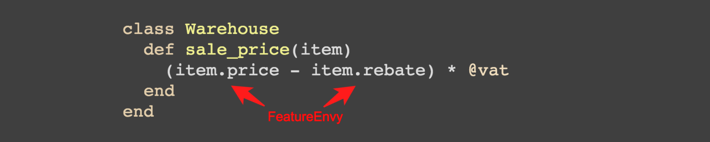

Exploiting Ruby's abstract syntax tree
A love story in 3 chapters

Who am I?
Berlin, Germany
Director of Engineering @ Blacklane
Part of the Reek and RubyCritic core team
Chapter 1
What is an Abstract Syntax Tree?
Or: How does Ruby run your program?
So what happens between...
def foo
puts 'hola!'
end
and
foo() # -> hola!
?
Stage 1
Tokenization
...is the process of breaking a stream of text into meaningful elements called tokens
Ripper.tokenize "def foo end"
["def", " ", "foo", " ", "end"]
Stage 2
Lexing
...is the process of giving meaning to these tokens
buffer = Parser::Source::Buffer.new('buffer', 1)
buffer.source = "def foo end"
Parser::CurrentRuby.new.tokenize(buffer)
[[:kDEF, ["def", #<Parser::Source::Range 0...3>]],
[:tIDENTIFIER, ["foo", #<Range 4...7>],
[:kEND, ["end", #<Range 8...11>]]]]
Stage 3
Parsing
...is the process of taking those tokens and creating an abstract syntax tree
Parser::CurrentRuby.parse "def foo; puts 'hola!' end"
s(:def, :foo,
s(:args),
s(:send, nil, :puts,
s(:str, "hola!")))
Stage 4
Compiling to Bytecode
...is the process of taking the AST and turning it into instruction sequences for the Ruby VM
RubyVM::InstructionSequence.
compile('def foo; end').
disassemble
putobject :foo\n0008
putiseq foo\n0010
opt_send_without_block ... \n0012
Stage 5
Pass bytecode to the interpreter and run it
putobject :foo\n0008
putiseq foo\n0010
opt_send_without_block ... \n0012
Ruby Interpreter
Quick recap
From source code to execution

Let's revisit Abstract Syntax Trees
A syntax tree consists of nodes and edges


Let's revisit Abstract Syntax Trees (cont'd)
Nodes consist of s-expressions ("symbolic expression")
s-expressions are a notation for nested list (tree-structured) data
s(:send,
s(:int, 1), :+,
s(:begin,
s(:send,
s(:int, 2), :*,
s(:int, 3))))
Why "abstract"?
AST's don't represent every detail that appears in the real syntax
:foo if :bar # Version 1
if :bar then :foo; end # Version 2
Both versions will result in the same AST
s(:if,
s(:sym, :bar),
s(:sym, :foo), nil)
So why would you care about any of this?
There are a ton of cool things you can only do on an AST
If you understand AST's you just learned LISP for free
For this talk we'll focus on the "cool things" ®
Chapter 2
Code Smells

Code Smells
A code smell is a hint that something might be wrong, not a certainty
Calling something a code smell is not an attack
No codebase is perfect
There are conceptually simple code smells

But there are also not so obvious, complicated smells
Feature Envy occurs when a code fragment references another object more often than it references itself
Reek is a tool that detects code smells
Running Reek on
class Warehouse
def sale_price(item)
(item.price - item.rebate) * @vat
end
end
How does Reek work?
We use the awesome parser gem to generate the AST
def syntax_tree
begin
ast, comments = parser.
parse_with_comments(source, origin)
rescue Racc::ParseError, Parser::SyntaxError => error
$stderr.puts "#{origin}: #{error.class.name}: "\
"#{error}"
end
end
This will return a tree consisting of Parser::AST::Node
We wrap that into a tree of contexts
def build(exp)
context_processor = "process_#{exp.type}"
if context_processor_exists?(context_processor)
send(context_processor, exp)
else
process exp
end
end
def process(exp)
exp.children.grep(AST::Node).each(&method(:build))
end
We then traverse this tree of contexts and run all eligible smell detectors on it
class UncommunicativeParameterName < SmellDetector
def inspect(context)
context.parameter_names.select do |name|
uncommunicative_parameter_name?(name, context)
end.map do |name|
smell_warning(
message: "has the parameter name '#{name}'",
# ...snip
end
end
def uncommunicative_parameter_name?(name, context)
!acceptable_name?(name: name, context: context) &&
context.uses_param?(name)
end
end
How can you start using Reek?
Use Reek's Rake task to add it to your CI
require 'reek/rake/task'
Reek::Rake::Task.new do |t|
t.fail_on_error = false
end
Add Reek's custom matcher to your RSpec examples
require 'reek'
require 'reek/spec'
require 'rspec'
RSpec.describe 'Reek Integration' do
it 'works with Reek' do
smelly_class = 'class C; def m; end; end'
expect(smelly_class).not_to reek
end
end
Include Reek using the Developer API
require 'reek'
source = <<-EOS
class Dirty
def m(a,b,c)
puts a,b
end
end
EOS
reporter = Reek::Report::TextReport.new
examiner = Reek::Examiner.new source
reporter.add_examiner examiner
reporter.show
Chapter 3
Mutation testing with Mutant

Mutation testing with Mutant
Takes code like this
class Greeter
def initialize(phrase)
@enabled = true
@phrase = phrase
end
def say_hello(options)
"#{@phrase} #{options[:name]}" if @enabled
end
end
And turns it into something like this
if true
"#{@phrase}#{" "}#{options[:name]}"
end
# Was
# "#{@phrase} #{options[:name]}" if @enabled
Or this
if @enabled
"#{@phrase}#{" "}#{options.fetch(:name)}"
end
# Was
# "#{@phrase} #{options[:name]}" if @enabled
The mutator then runs your tests against each mutation

Mutation testing with Mutant
Failing tests kill the mutants
Surviving mutants show a lack of test coverage
How does Mutant work?
!!! THIS SECTION IS WIP AT THE MOMENT !!!
How can you start using Mutant?
Include it into your CI
Integrating Mutant into your CI has consequences
Depending on what you do, your CI runs might become really slow
Your CI runs will fail. A lot.